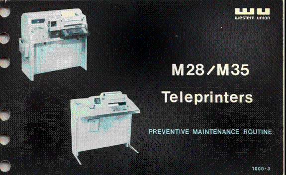

Bell System Practices (BSP) documents were the official technical standards and procedures used throughout the Bell System for installation, maintenance, and adjustment of telecommunications equipment. BSP 570-001-901 covers critical adjustments for the principal Teletype models in Bell System service.
This document is the essential reference for anyone adjusting or restoring a Model 14, 15, 28, or 33. It provides precise procedures for selector adjustment, timing, range setting, and the interrelated mechanical adjustments that must be performed in the correct sequence. The original publication was issued in seven sections; they are presented here as a single merged PDF.
Model 15 Typing Unit, Keyboard & Keyboard Perforator-Transmitter
Model 28/35 Typing Unit — Part One
Model 28/35 Typing Unit — Part Two
Model 28 Keyboard, Perforator Transmitter & Typing/Non-Typing Perforator
Model 28 Typing Reperforator
Model 28 Transmitter Distributor & Model 33
Model 15 Typing Unit, Keyboard & Keyboard Perforator-Transmitter
Model 28/35 Typing Unit — Part One
Model 28/35 Typing Unit — Part Two
Model 28 Keyboard, Perforator Transmitter & Typing/Non-Typing Perforator
Model 28 Typing Reperforator
Model 28 Transmitter Distributor & Model 33
This comprehensive field service manual covers the care and maintenance of the Models 28 and 35 ASRs from the Western Union perspective. At 168 pages across 18 parts, it is the most detailed service reference in this library for the Model 28 family, complementing the Bell System Practices critical adjustments document with broader procedural coverage.
The manual covers mechanical and electrical theory of operation, adjustment procedures, troubleshooting, and parts identification for the Model 28 and 35 in the configurations used on Western Union circuits. It was written for Western Union field technicians and assumes professional-level familiarity with teletype equipment.
All eighteen parts are available below, along with the cover page and table of contents. Each part is a separate PDF; start with the cover and contents to identify the section you need.

This catalog documents the specialized tools produced by the Teletype Corporation for maintaining its equipment. Many of these tools — gauges, alignment aids, and specialized wrenches — are not easily fabricated or substituted, and knowing their specifications is essential for anyone attempting a thorough mechanical restoration.
The catalog is useful both for identifying tools by part number when sourcing original examples, and for understanding the intended adjustment procedures that require specific tooling. Issued August 1977, this was among the last technical publications produced before Teletype’s manufacturing wind-down.
The “stunt box” is the Model 28’s built-in sequential selector — a 9¼″×4½″ mechanism with slots that accept trains of miniature parts or switches to perform an almost unlimited array of non-typing functions. The name derives from old printing telegraph usage, where non-typing operations were called “stunts.”
In practice, the stunt box is one of the most powerful and least understood features of the Model 28. It can respond to specific characters or sequences in the incoming signal and initiate mechanical or electrical actions — routing, switching, alerting, or controlling associated equipment — without operator intervention.
The Stunt Box Book is the definitive reference for understanding, configuring, and exploiting the stunt box in amateur and commercial applications.